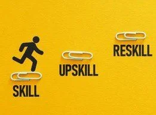
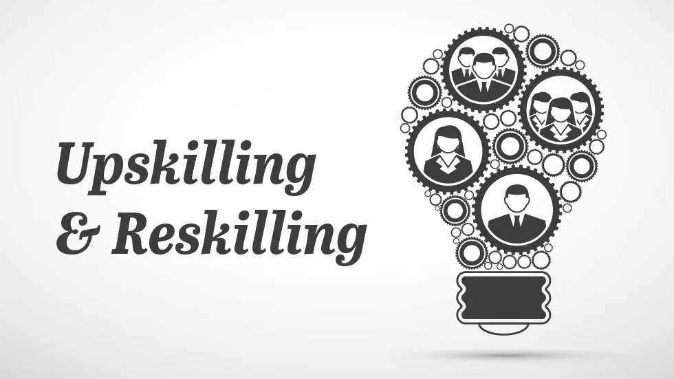

Work is always moving forward.
Technology and job roles are evolving faster than ever. Refreshing your skills helps you meet change with confidence instead of falling behind.
Learn. Adapt. Thrive.
SKILLS FOR WHAT'S NEXT
The Reskilling & Upskilling Track at the IEEE Returning Mothers Conference 2026 is designed to help returning mothers, professionals, and learners build future-ready skills, explore new career opportunities, and confidently navigate the evolving world of work.
As technology, industries, and workplace expectations continue to change, continuous learning has become essential for career growth and workforce integration. This track empowers participants with the knowledge, tools, and confidence needed to restart, pivot, or reinvent their careers.

GROW INTO WHAT'S NEXT02 / THE TRACK AT A GLANCE
A welcoming space to rediscover your strengths, grow with change, and move forward with confidence.
A dedicated learning and career development platform for returning mothers and professionals.
Builds future-ready skills for today’s changing job market.
Explores emerging technologies, industry trends, and alternative career pathways.
Encourages lifelong learning, adaptability, and career confidence.
Helps participants identify the right skills for career re-entry and growth.

03 / WHY KEEP LEARNING
The world of work is changing. Keep your experience relevant, your options open, and your next step within reach.
Technology and job roles are evolving faster than ever. Refreshing your skills helps you meet change with confidence instead of falling behind.
Employers increasingly seek professionals with adaptable, up-to-date skills.
Career breaks can make it important to refresh knowledge and rebuild capabilities.
Continuous learning improves employability, confidence, and career flexibility.
Future career success depends on both technical and professional skills.
04 / MANY WAYS TO MOVE FORWARD
Discover possibilities that fit your strengths, interests, and the life you want to build.
Work in leading companies with structured growth opportunities.
Build a venture and turn innovative ideas into real businesses.
Solve business challenges and work with organizations across industries.
Shape future talent by sharing your knowledge, skills, and guidance.
Explore deep technical and scientific questions and discoveries.
Work independently and shape a flexible career with global opportunities.
Contribute your skills to meaningful community and nonprofit initiatives.
Create and grow online-first businesses and new digital services.
05 / LEARN, CONNECT, GROW
Practical learning, honest insights, and people who can help you take your next career step.
Hear candid talks from industry leaders and experienced professionals.
Take part in hands-on learning sessions and practical workshops.
Get career guidance from experienced mentors.
Discover real-life stories from women who have successfully restarted their careers.
Understand current industry demands and hiring trends.
Build relationships with employers, professionals, and peers.
06 / THERE'S A PLACE FOR YOU
If you’re ready to learn, grow, or make a change, this track is for you.
Every career journey is different. Every next step starts somewhere.
Bring your experience, curiosity, and ambition—there’s more than one way to move forward.
07 / INVEST IN YOUR NEXT CHAPTER
Turn what you already know into a foundation for what you want to do next.
Develop the capabilities employers value in a changing world of work.
Get clarity on what to learn next and where your skills can make an impact.
Explore career options and growth paths that match your strengths.
Learn from mentors, specialists, and leaders across industries.
Build momentum and confidence as you prepare to re-enter the workforce.
Create a practical roadmap for long-term career success.
OUR CONFERENCE THEME
Aligned with the conference theme, “The Future is Shared: Changing the Story of Work, Care, and Confidence,” this track recognizes that career success is built through continuous learning, supportive ecosystems, and the confidence to embrace change.
Whether you are returning to work, exploring a new career path, or preparing for the future of work, the Reskilling & Upskilling Track will equip you with the skills, knowledge, and confidence to move forward with purpose.
Learn together. Move forward together.